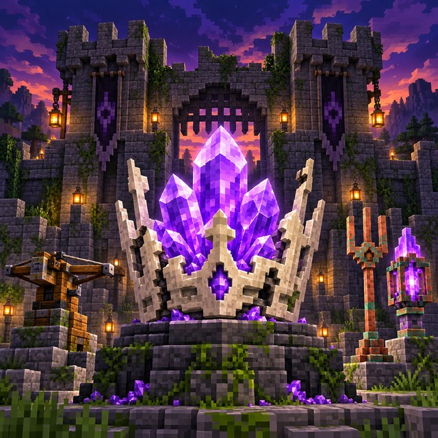
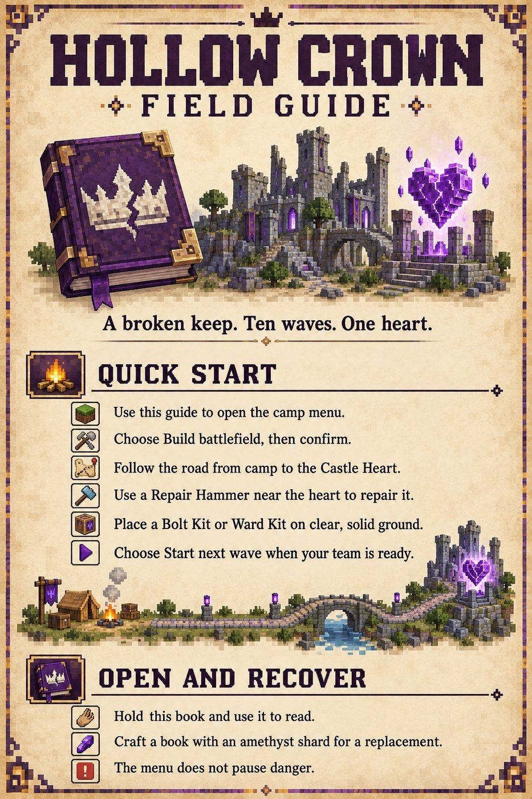
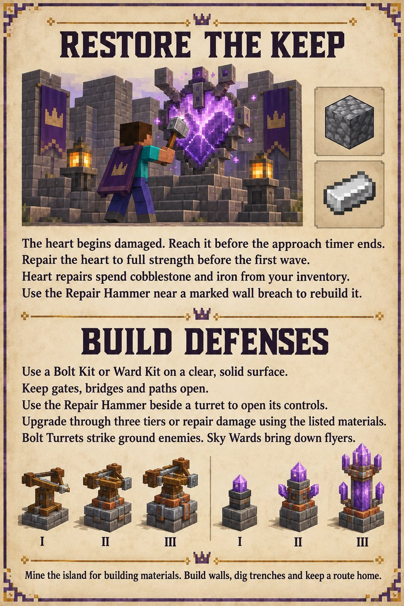
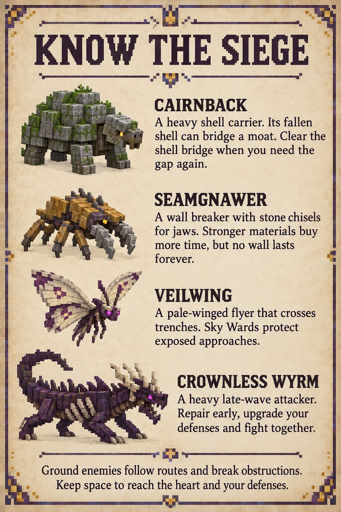
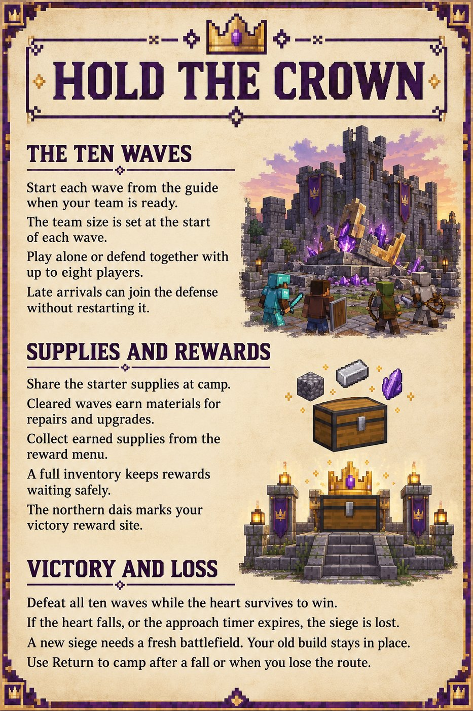

Media kit
Logo, screenshots, store copy and fact sheets for publishers and press. All screenshots are in-game captures from Minecraft: Bedrock Edition.
Studio
| Name | Grape Games |
| Focus | Minecraft: Bedrock Edition add-ons and worlds |
| grapegames3141@gmail.com | |
| Website | grapegames3141.github.io/im-crafty |
| GitHub | github.com/GrapeGames3141 |
| Projects | Campfire Phoenix, Fortified Frontiers, Giant's Abandoned Garden, Relic Siege, Hollow Crown, Gold Golem Logistics, Battlecraft, Elemental Pilgrimage, Kindred Villages, Lane Siege, Echoes of the Six Seals |
Grape Games is a small, independent studio making Minecraft: Bedrock Edition content: companions, monsters, game modes and explorable worlds, tested on real Bedrock servers and clients.
Logo
Campfire Phoenix
| Type | Add-on |
| Platform | Minecraft: Bedrock Edition |
| Status | In development (v1.0.11) |
Short description
A tameable fire-resistant Phoenix companion that hatches from campfires, fuels your furnaces and rises again from its ashes.
Long description
Break a campfire and you might release a Phoenix. Tame it with charcoal, and your new companion follows you, defends you with flame bolts, and keeps your furnaces fed with Phoenix Feathers. If it falls, it leaves Phoenix Ashes behind. Light them, and your Phoenix returns with its name and owner intact.
Key features
- Tameable Phoenix that sits, follows, can be named and leashed, and defends its owner
- Phoenix Feathers: furnace fuel supplied by a Phoenix sitting near a furnace, blast furnace or smoker
- Phoenix Ashes revive a fallen Phoenix with its name and owner
- Four-page in-game guide, delivered to each player
- No experimental toggles required
Screenshots (in-game)
 Phoenix in flight over the ocean
Phoenix in flight over the ocean Phoenix flying over grassy hills
Phoenix flying over grassy hills Phoenix standing, front view
Phoenix standing, front view Phoenix standing, side view
Phoenix standing, side view Phoenix in flight, rear view
Phoenix in flight, rear view Phoenix Ashes
Phoenix AshesFortified Frontiers
| Type | Add-on |
| Platform | Minecraft: Bedrock Edition |
| Status | In development (v2.2.0) |
Short description
A monster-hunting adventure with bounties, regional story chains, lair sites, armor sets and an illustrated field guide.
Long description
Take bounties from a Bounty Board, track monsters across five frontiers, and earn armor sets with their own powers. Each region has a three-stage story: recover a relic, hunt a weaker beast, then take on a strong monster in its lair. The Frontier Map and a 16-page illustrated field guide keep you on track.
Key features
- Ten new expansion monsters alongside the original ten
- Five regions (Enchanted Forest, Haunted Moor, Ember Crags, Shattered Coast, Starfall Steppe), each with a lair site and a three-stage story
- Five four-piece armor sets with full-set abilities
- Bounty Boards, Quartermasters and Captains as quest hubs, plus a Frontier Map
- Sixteen-page illustrated Frontier Field Guide
Screenshots (in-game)


Giant's Abandoned Garden
| Type | World |
| Platform | Minecraft: Bedrock Edition |
| Status | In development (v1.2.0) |
Short description
Shrink down and explore a giant's overgrown garden of towering mushrooms, ancient roots and flowerpot cottages.
Long description
A giant once tended this garden. Now it has grown wild, and you're small enough to get lost in it. Walk beneath giant mushrooms, climb the stairway into an enormous tree, and discover cottages built inside a giant flowerpot.
Key features
- Grove of five giant mushrooms
- Three cottages inside a giant flowerpot
- Lookouts and stairways in the roots of an ancient tree
- A pond with lily pads, plus a giant garden spade
- Built entirely from vanilla blocks, no packs required
Screenshots (in-game)


Relic Siege
| Type | Add-on + World |
| Platform | Minecraft: Bedrock Edition |
| Status | In development (v1.0.5) |
Short description
Co-op tower defense: guard a shared Relic with four tower families against waves of mobs.
Long description
Protect the Relic at the heart of a fortified arena. Craft tower cores, place and upgrade towers, build maze defenses, then start each wave when your team is ready. Every cleared wave fills a shared chest with materials for the next fight.
Key features
- Four tower families: Ballista, Ember Spire, Frost Obelisk and Ward Beacon
- Three tower tiers with growing footprints, up to 64 towers per arena
- Manually started waves with shared rewards
- Prepared Ruined Fortress Island world, or raise an arena in any world
- In-game Guidebook with field tools
Screenshots (in-game)


Hollow Crown
| Type | Add-on |
| Platform | Minecraft: Bedrock Edition |
| Status | Human-test candidate (v0.1.0) |
Short description
Tower defense in a floating ruined keep: repair the Castle Heart, place turrets and hold out through ten waves.
Long description
A broken keep. Ten waves. One heart. Build a floating ruined castle in the sky, follow the road from camp to the damaged Castle Heart and repair it before the siege begins. Place Bolt Turrets and Sky Wards, rebuild breached walls with the Repair Hammer, and hold the heart against ground and flying creatures, alone or with up to eight defenders.
Key features
- An 81×81 floating ruined keep, built in empty sky so existing terrain and builds stay in place
- Two turret lines, Bolt Turret and Sky Ward, each with three tiers to upgrade and repair
- Four original creatures: Cairnback, Seamgnawer, Veilwing and Crownless Wyrm
- Ten waves started when your team is ready, with rewards after each cleared wave
- Co-op for up to eight players, illustrated four-page Field Guide, no experimental toggles
Pack icon and Field Guide pages

Pack icon
Quick start
Restore the keep
Know the siege
Hold the crownGold Golem Logistics
| Type | Add-on |
| Platform | Minecraft: Bedrock Edition |
| Status | In development (v0.3.0) |
Short description
Upgrade copper golems into Gold Golems that carry your items between Gold Chests, so you can watch every delivery happen.
Guidebook pages


Art and AI
Some of our artwork, including guidebook illustrations, was made with AI image tools. Every screenshot in this kit was captured in Minecraft: Bedrock Edition.
Legal
NOT AN OFFICIAL MINECRAFT PRODUCT. NOT APPROVED BY OR ASSOCIATED WITH MOJANG OR MICROSOFT. Minecraft is a trademark of Mojang AB.